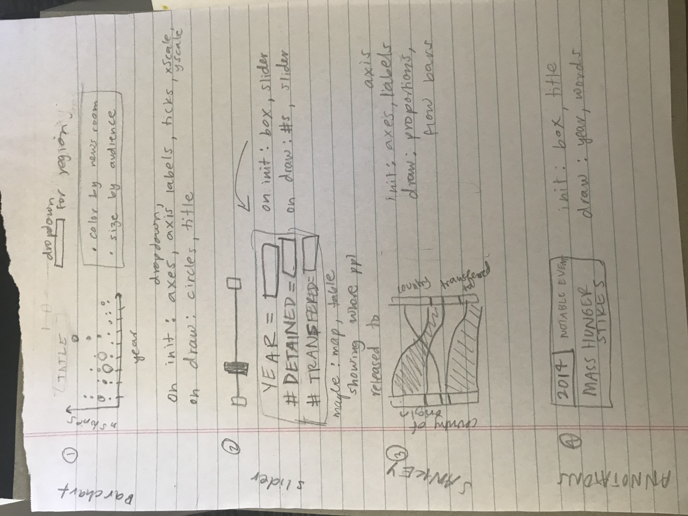

Process: Who's Still Talking About Guantánamo Bay?
After listening to a podcast, "The Other Latif" (which I highly recommend!), I realized that I don't read much news about Guantánamo Bay these days. I wanted to dig into how much or how little the mainstream media has reported on the subject over the past decade. I created a mix of static and interactive visualizations to illustrate the narrative of declining news coverage on the topic.
Visit the completed website or view the source code.

Information Design
My primary goal for this project was to display the number of news stories written about Guantánamo Bay over time in a clear and simple way. I chose to do this with two charts: a line chart displays the counts of daily news stories, and a bar chart aggregates the counts to yearly news stories. When I first made the line chart, I immediately wondered what happened in the news on the days with big spikes in the number of stories. The annotations allowed me to share that with the viewer, which I hope helps them keep their focus on the rest of the visualization.
The bar chart, which displays the number of stories per year, cuts down the noise from the daily data. By looking at the number of stories aggregated by year, the viewer can clearly see the decline in reporting over the past five years. I added a drop-down to un-stack the bars based on individual newsrooms, because the source-specific values are difficult to compare across bars.

The technical architecture helped me keep track of what needed to be re-drawn once a change was made by the user (i.e., x-axis should be re-sized once the data is filtered based on a drop-down selection). My ideas changed between this document and the final product, but this is the type of document that helps me manage all of the moving parts.
Technical Overview
I collected the raw data using Media Cloud, an open-source platform for media analysis. Once I had that, I wrote a python script to clean and aggregate the data. You can find that python script here. All of the data files used for the project can be found in the "data" folder of that same repository. I recommend experimenting with Media Cloud if you ever get a chance. It is a great tool!
I used the New York Times' "The Guantánamo Docket" project to get the prison population by year. You can find that project, and lots more information about the history of Guantánamo Bay, here.